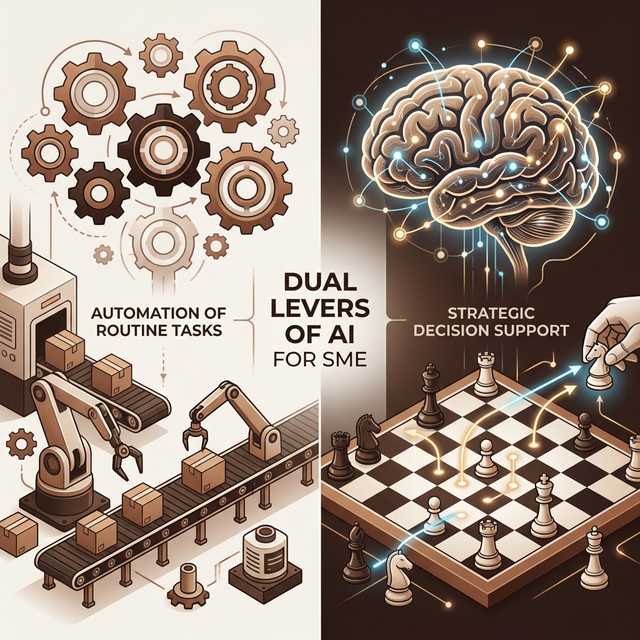

Strategie
Welcher Hebel für den Einsatz von KI ist wichtiger für den Mittelstand in Deutschland? Automatisierung vs. Kerngeschäft
Wo bringt der Einsatz von Künstlicher Intelligenz den größten Mehrwert? Ein strategischer Blick auf die Automatisierung einfacher Workflows im Vergleich zur Aufschwertung des Kerngeschäfts.